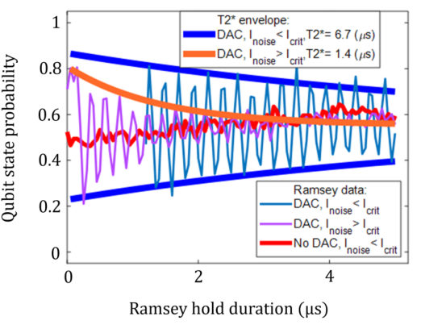
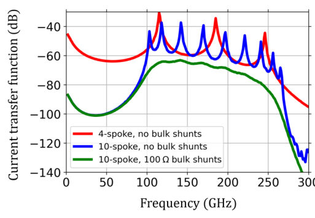

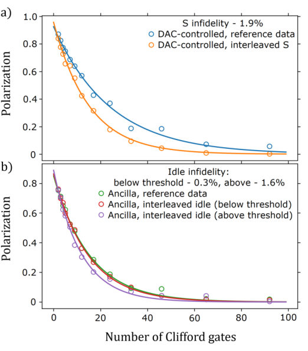
← Index · ← Previous · Next →
Authors: Derek Reitz, Tony X. Zhou, Aditya Sharma, Ryan Bilotta, John McFarland, Aref Fouladi, Jacob Glasby, Aruna Ramanayaka, Zachary Stegen, Aaron Pesetski, Mark Covington, Gregory Boyd, Jeremy Clark
Type: both · Category: quantum information and computing · PDF: https://arxiv.org/pdf/2607.05072v1
Analysis basis: full PDF text, analyzed in chunks
Topic relevance: 🔥 QC/QI experiment 4/5 · methods for driven-dissipative 3/5 · driven-dissipative phase transition 2/5 · non-equilibrium dynamics 2/5 · Frenkel-Kontorova 1/5 · correlated / nonlocal dissipation 1/5 · non-equilibrium universality 1/5 · quantum measurements 1/5



Summary. This paper introduces and experimentally validates a superconducting Digital-to-Analog Converter (DAC) that uses solitons to generate high-fidelity control pulses for transmon qubits. The DAC effectively filters classical noise while enabling fast, robust quantum gate operations. While demonstrating excellent local performance, the authors identify non-local electromagnetic interference as a key hurdle for scaling to many qubits.
Why it may be interesting. For a theorist in open quantum systems, this work provides an excellent case study of engineering control channels. The soliton mechanism offers a physical realization of converting noisy classical inputs into clean, time-domain quantum pulses, which is crucial for modeling realistic decoherence sources beyond simple T1/T2 decay.
Main problem. The primary challenge is developing scalable, low-noise control mechanisms for superconducting qubits to perform high-fidelity quantum gates.
Main result. A novel superconducting soliton DAC was demonstrated capable of performing S-gates with very low excitation probability (0.05%) and showed promise for scaling despite identifying non-local EMI limitations.
Method. The authors used a superconducting DAC, which transduces classical CMOS pulses into quantum control signals via solitons, and characterized performance using randomized benchmarking and noise injection tests.
Model / system. The system uses transmons coupled to a Soliton DAC built from Josephson Junctions (JJs). The dynamics are modeled by the Sine-Gordon equation, allowing the DAC to act as an active buffer that filters control noise.
Key observables. S-gate fidelity ($\approx 1.9\%$), DAC-induced excitation probability ($0.05\%$), and non-local phase error (1.6% per gate at scale).
Important parameters / regimes. Gate time (nanoseconds), noise thresholds ($I_{ ext{crit}}$), and the ratio of Josephson junction inductance to resistance ($L/R$) determining slew rate.
Assumptions / limitations. The initial analysis assumes that non-local errors from multiple DACs are the dominant scaling bottleneck, requiring mitigation via resistive shunting or tunable couplers.
Figures summary. Figures illustrate the noise filtering capability of the DAC current transfer function (Fig. 2), the protection of coherence against injected noise (Fig. 3), and the trade-off between leakage and phase errors based on the DAC load loop time constant (Fig. 8).
Paper structure. The paper progresses from introducing the physical platform (soliton DAC) to demonstrating its functionality (S-gates, noise filtering), quantifying performance limits through error analysis (non-local EMI), and finally discussing mitigation strategies for scaling.
We introduce a superconducting digital-to-analog converter (DAC) that filters control noise, provides native multiplexing, performs quantum gates in nanoseconds, and can be controlled by CMOS. This is achieved by transducing a trapezoidal drive pulse into a superconducting soliton, which is then held in the DAC load loop, applying flux to a mutually-coupled superconducting qubit or gate coupler. The analog flux output by the DAC can be easily controlled by varying the soliton hold time, or with a DC-biased tunable DAC-qubit coupler, allowing the DAC to perform a fixed-time, high-fidelity gate that's robust to fabrication variance or flux offsets in the quantum circuit. Our initial demonstration shows that the DAC can successfully perform 5.6 ns S-gates on transmons. We measure the DAC-induced quantum state excitation probability per gate to be 0.05%, and find that the DAC-induced relaxation rate from the qubit 1 state is below the intrinsic T1 rate limit of the transmon. Quantum simulations show qualitative agreement with the measured data, and predict that the DAC excitation rate can be lowered 10 times further by overdamping the Josephson junction (JJ) in the DAC load loop. may be limited by a Interleaved Randomized Benchmarking (IRB) sequences on an observer qubit reveal that, when scaling to many qubits, the DAC's performance may be limited by a non-local, DAC-induced phase error of 1.6% per gate, appearing in ancilla qubits that are not directly coupled to any of the 30 DACs on the chip. We discuss strategies for future layouts of multi-DAC chips that focus on mitigating the source of these non-local, high-frequency electromagnetic interactions (EMI), and how to incorporate a DC-tunable coupler for phase correction.
Authors: Udomsilp Pinsook
Type: theory · Category: strongly correlated electrons · PDF: https://arxiv.org/pdf/2607.03937v1
Analysis basis: full PDF text, analyzed in chunks
Topic relevance: 🔥 Keldysh / 2PI / non-Gaussian methods 4/5 · methods for driven-dissipative 3/5 · non-equilibrium dynamics 3/5 · non-equilibrium universality 2/5 · correlated / nonlocal dissipation 1/5 · driven-dissipative phase transition 1/5
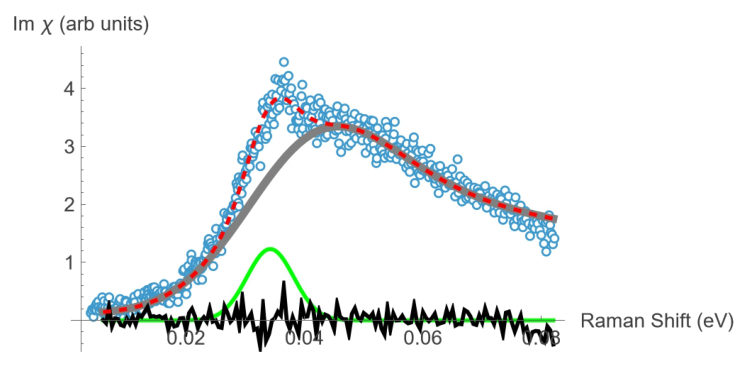
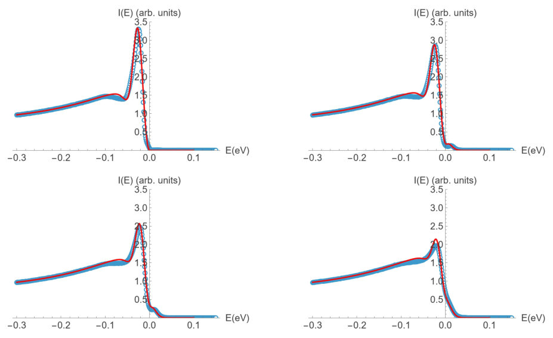


Summary. This paper proposes a dynamical theory for unconventional superconductors where the superconducting pair field is treated as having 'memory' due to coupling with fluctuating local fields. The key finding is that superconductivity involves reorganizing spectral weight between an incoherent pseudogap memory background and a coherent, phase-locked Bogoliubov component below $T_c$. This framework unifies descriptions across multiple experimental probes like ARPES and Raman spectroscopy.
Why it may be interesting. The treatment of superconductivity through dynamic memory effects and spectral weight redistribution is highly relevant to understanding non-equilibrium dynamics and strong correlations in condensed matter systems.
Main problem. To develop a dynamical description of the superconducting pair field that treats it as a memory-dressed Bogoliubov pair field, moving beyond static order parameter approximations.
Main result. The superconducting transition is characterized by a reorganization of spectral weight between an incoherent pseudogap memory channel and a coherent condensate-assisted Bogoliubov memory channel.
Method. The authors use effective action methods, coupling the pair field to fluctuating local fields whose ensemble averaging generates a Gaussian memory factor. The resulting response functions are expressed using parabolic-cylinder functions.
Model / system. The model focuses on unconventional superconductors, particularly cuprates like Bi2Sr2CaCu2O(8+d). It incorporates fluctuations arising from the antinodal gap/pseudogap acting as a momentum-space spectral cavity.
Key observables. Pair field dynamics, pseudogap memory channel, coherent Bogoliubov memory, and frequency-domain response functions (analyzed via Raman, ARPES, tunneling).
Important parameters / regimes. Critical temperature ($T_c$), pseudogap scale ($T^*$), Gaussian dephasing time ($ au_g$), and the coherence factor $|\Delta_0(T)|^2$.
Assumptions / limitations. The ensemble averaging of local field fluctuations is assumed to yield an approximately Gaussian distribution, leading to the characteristic memory envelope.
Paper structure. The paper builds from a general pair-field effective action by introducing fluctuating reservoir fields. It derives the memory kernel via Gaussian ensemble averaging and then analyzes how this structure dictates the spectral weight transfer across different temperature regimes, culminating in comparisons with various experimental probes.
We develop a dynamical description of the superconducting pair field in which the Cooper-channel Hubbard--Stratonovich field $Δ$ is treated as a memory-dressed Bogoliubov pair field rather than as a purely static order parameter. Starting from the standard pair-field effective action, we couple $Δ$ to antinode-selected collective or self-generated fields. An ensemble of such modes produces a distribution of local Bogoliubov frequencies; when this distribution is approximately Gaussian, ensemble averaging gives the memory factor $\exp[-t^2/(2τ_g^2)]$. In cuprate superconductors, the antinodal gap or pseudogap restricts the active electronic phase space and acts as a momentum-space spectral cavity. It selects fluctuation wavevectors $\mathbf Q_a$ that may become charge-density-wave-like instabilities in an ordered limit, but behave as a reservoir of local collective fields in the fluctuating regime. The same framework admits resonant algebraic prefactors, so that threshold and forced-oscillator responses generate the hierarchy $p=-1/2,1/2,1,3/2,\ldots$, while the Gaussian envelope cuts off secular growth and converts these branches into finite spectral components. The resulting picture contains a robust pseudogap memory channel and, below $T_c$, an additional condensate-assisted coherent channel proportional to $|Δ_0(T)|^2$. Thus the superconducting transition primarily reorganizes pair-field spectral weight between incoherent pseudogap memory and coherent Bogoliubov memory. The frequency-domain response is expressed in terms of parabolic-cylinder functions, and comparisons with Raman, ARPES, tunneling, and doping-dependent ARPES scaling suggest that these probes are complementary projections of the same Gaussian-memory pair continuum. We compare our numerical results with the recent experimental data on Bi$_2$Sr$_2$CaCu$_2$O$_{8+δ}$.
Authors: Rajiv Kumar, Panch Ram, Levan Chotorlishvili, Sunil Kumar Mishra
Type: theory · Category: quantum information and computing · PDF: https://arxiv.org/pdf/2607.04399v1
Analysis basis: full PDF text, analyzed in chunks
Topic relevance: 🔥 analog quantum simulation 4/5 · Keldysh / 2PI / non-Gaussian methods 2/5 · driven-dissipative phase transition 2/5 · methods for driven-dissipative 2/5 · Kondo & dissipative impurity 1/5 · entanglement & information structure 1/5 · exotic spin models in light-matter 1/5 · non-equilibrium dynamics 1/5


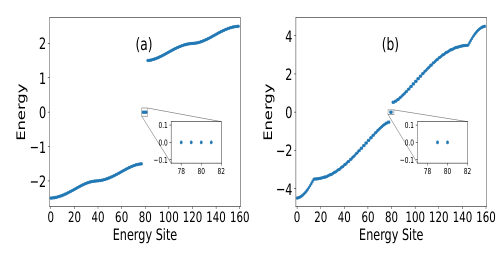

Summary. The paper theoretically analyzes a zigzag Kitaev chain to map out its topological phase diagram by controlling inter-chain couplings and superconducting phases. It demonstrates that this structure can host multiple, controllable Majorana zero modes (up to four), confirming its potential as a minimal platform for building MZM-based quantum computing devices.
Why it may be interesting. This work directly addresses the engineering of robust Majorana zero modes, which are central components for realizing fault-tolerant quantum computation architectures using superconducting circuits or nanowires.
Main problem. The study investigates the spectral and topological properties, specifically the multiplicity of Majorana zero modes (MZMs), within a zigzag Kitaev chain.
Main result. The model establishes that the zigzag Kitaev chain is a minimal platform capable of supporting distinct topological phases hosting two or four MZMs, depending on superconducting phase differences and couplings.
Method. Analysis employs the Bogoliubov-de Gennes formulation to examine the energy spectrum, quasi-particle dispersion, and calculate the winding number ($ u$).
Model / system. The system is a zigzag Kitaev chain constructed by diagonally coupling two one-dimensional Kitaev chains. The Hamiltonian incorporates hopping amplitudes, pairing strengths, chemical potential, and inter-chain couplings ($J_h, J'_h$), with superconducting phase differences $\phi$ being a key variable.
Key observables. Energy spectrum (gap closures), number of MZMs (two or four), quasi-particle dispersion, and the winding number ($ u$).
Important parameters / regimes. Superconducting phase difference ($\phi=0$ vs. $\phi=\pi$), chemical potential ($\mu$), and diagonal coupling strengths ($J_h, J'_h$).
Assumptions / limitations. The analysis is performed using Open Boundary Conditions (OBC), and the model parameters are assumed to be real.
Figures summary. Figures illustrate the energy spectrum vs. chemical potential ($\mu$) for different phase differences, showing transitions between topological phases with varying MZM counts; they also show spatial distributions of zero-energy states and winding number calculations.
Paper structure. The paper systematically analyzes the Hamiltonian using BdG theory, first establishing the dependence on $\phi$ (comparing $\phi=0$ to $\phi=\pi$), then mapping out the phase diagram by tracking gap closures and calculating topological invariants like the winding number to confirm MZM counts.
We investigate the spectral and topological properties of a zigzag Kitaev chain constructed from two diagonally coupled one dimensional Kitaev chains with a zero and finite superconducting pairing phase difference. Using a Bogoliubov-de Gennes formulation, we analyze the energy spectrum, distribution of Majorana zero modes (MZMs), the quasi-particle dispersion, and the winding number, respectively. For a zero phase difference, the resulting energy spectrum shows topological phases with two, four MZMs, and trivial regions. The phases of gap closure determine the topological phase boundaries. In particular, for the phase difference between $φ=π$, the degeneracy of MZMs is partially lifted, leading to modified topological phases compared to the case $φ=0$. The topological and trivial phase boundaries are further confirmed by evaluating the quasi-particle dispersion and the topological invariant, namely the winding number. We show that the zigzag Kitaev chain contributes independently to the total winding number $ν= 1$ and $2$, giving rise to distinct topological phases that support two and four MZMs. The $ν= 0$ gives rise to a trivial region. The energy spectrum of systems corroborates the analytical phase boundaries and reveals characteristics associated with hybridization, enabling us to obtain the complete phase diagram of the zigzag model. Our results establish the zigzag Kitaev chain as a minimal platform for engineering MZM quantum computations, with potential applications in the study of topological phases and Majorana based qubit physics.
Authors: Prerna Rao, Som Kanjilal
Type: theory · Category: quantum information and computing · PDF: https://arxiv.org/pdf/2607.04298v1
Analysis basis: full PDF text, analyzed in chunks
Topic relevance: 🔥 quantum measurements 4/5 · measurement-induced transitions 3/5 · entanglement & information structure 2/5 · correlated / nonlocal dissipation 1/5 · driven-dissipative phase transition 1/5 · methods for driven-dissipative 1/5 · non-equilibrium dynamics 1/5

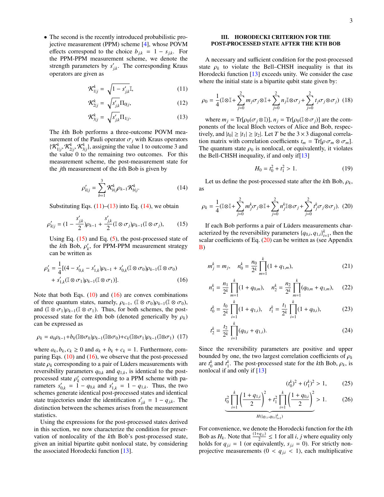


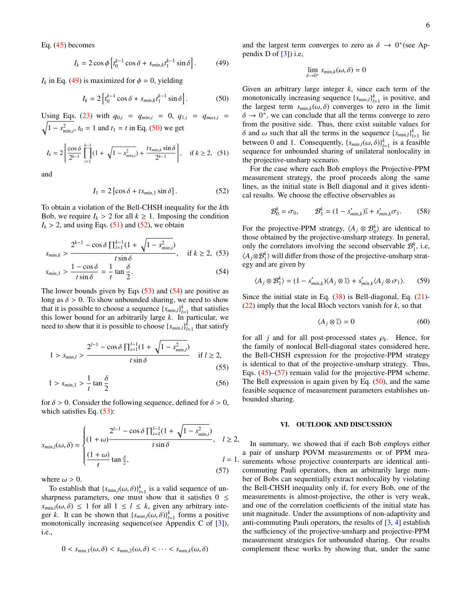
Summary. This paper theoretically characterizes the conditions required for sharing Bell-nonlocality across an infinite sequence of copies using repeated quantum measurements. It demonstrates that this is possible only under specific constraints on the measurement strengths, leading to a Zeno-like confinement where successive states converge while remaining nonlocal. This advances understanding of resource distribution in quantum information protocols.
Why it may be interesting. This work provides a deep theoretical understanding of how quantum correlations, specifically nonlocality, can be robustly distributed or 'shared' over many sequential operations, linking concepts from measurement theory (Zeno effect) to fundamental resource quantification in QI.
Main problem. The research investigates the necessary conditions for sequentially sharing Bell-nonlocality among an unbounded number of copies via repeated quantum measurements.
Main result. Unbounded nonlocality sharing is possible only if the measurement strategy involves a combination of one 'almost projective' measurement acting as an anchor and another very weak measurement. This process leads to a Zeno-like confinement where successive states become nearly identical while maintaining nonlocality.
Method. The authors analyze the evolution of the bipartite quantum state using recurrence relations derived from two specific measurement types: unsharp measurements and Probabilistic Projective Measurements (PPMs).
Model / system. The model involves a bipartite qubit system initially prepared in a Bell-diagonal mixed state ($ ho_0$) that violates the CHSH inequality. The nonlocality is preserved through sequential post-processing steps applied by an external agent.
Key observables. Violation of the Bell-CHSH inequality, the Horodecki function ($H_k$), and the distance between successive states ($\Delta_2^k$).
Important parameters / regimes. The measurement parameters, such as unsharpness parameters ($s_{j,k}$) or reversibility parameters ($q_{j,k}$), must approach specific limits (e.g., $s_{\min} o 0^+$ and $q_{\max} o 1^-$) for the process to be unbounded.
Assumptions / limitations. The analysis assumes non-adaptive measurement strategies and focuses on anti-commuting Pauli observables, establishing necessary conditions for feasibility.
Figures summary. Not specified by notes; the structure relies on deriving mathematical expressions (Eqs. 15-62) showing state evolution and convergence.
Paper structure. The paper first establishes the general requirements for unbounded sharing (incompatibility + nonlocality preservation). It then analyzes two specific measurement schemes (unsharp/PPM), derives necessary conditions based on maintaining $H_k > 1$, and finally constructs a feasible sequence of parameters demonstrating Zeno-like confinement.
To enable sequential sharing of Bell-nonlocality by an unbounded number of copies, each copy must satisfy two requirements. First, the measurements must be incompatible to extract nonlocality. Second, the post-processsed state, obtained as an equal mixture of the two post-measurement states, must remain nonlocal. We show that the incompatibility requirements impose nontrivial constraints on the choice of the initial nonlocal state and the amount of measurement noise required to ensure that the post-processed state remains nonlocal for an unbounded number of copies. We establish this result for two measurement scenarios, namely, when each copy performs unsharp measurements corresponding to a pair of anti-commuting Pauli observables, and when each copy performs probabilistic projective measurements (PPMs) of a pair of anti-commuting Pauli observables. Furthermore, we show that, in the asymptotic limit, the nonlocal post-processed states of all the copies are almost identical, leading to a quantum Zeno-like confinement within the nonlocal region.
Authors: Minsoo Kim, Changhun Oh, Donghoon Kim
Type: theory · Category: numerical methods · PDF: https://arxiv.org/pdf/2607.03939v1
Analysis basis: full PDF text, analyzed in chunks
Topic relevance: 🔥 entanglement & information structure 4/5 · methods for driven-dissipative 3/5 · analog quantum simulation 2/5 · exotic spin models in light-matter 1/5 · non-equilibrium dynamics 1/5


Summary. The paper investigates the structure of disentangling transformations in Haldane spin systems using an advanced DMRG technique incorporating Clifford circuits. They identify that the optimal transformation is the generalized Kramers–Wannier (KW) duality, which analytically proves a mapping from the topological Haldane phase to a state exhibiting spontaneous $\mathbb{Z}_2$ symmetry breaking. This offers a novel unitary pathway for understanding symmetry protection and breaking in quantum matter.
Why it may be interesting. This work bridges quantum simulation techniques (DMRG/MPS) with deep topological physics concepts (SPT phases, hidden symmetries), providing a concrete circuit-level understanding of how entanglement reduction reveals underlying physical order.
Main problem. The study focuses on understanding the analytic structure and mechanism of 'disentangler' transformations used to classically simulate quantum many-body systems, particularly within the Haldane phase.
Main result. The optimal local disentangler for the Haldane phase is shown to implement the generalized Kramers–Wannier (KW) transformation, which maps the SPT phase to a state exhibiting spontaneous $\mathbb{Z}_2$ symmetry breaking.
Method. The authors extend the Clifford-circuit-augmented Matrix Product States (CAMPS)-based Density-Matrix Renormalization Group (DMRG) method to spin-1 systems using generalized Clifford circuits for optimization.
Model / system. The research analyzes spin-1 chains, specifically examining models like the Heisenberg and Bilinear-biquadratic (BLBQ) Hamiltonians that exhibit the Haldane phase. The AKLT state serves as a key analytically tractable representative system.
Key observables. Entanglement entropy $E(\ell)$, ground-state energy error $\delta E$, two-point correlation functions $\langle S_z^j S_z^{j+r} \rangle$, and the order parameter $\langle S_z^j \rangle$.
Important parameters / regimes. The system is studied in the Haldane phase regime, with specific attention paid to the angle $\theta$ in the BLBQ model.
Assumptions / limitations. The analysis assumes that the optimal disentangler can be found via Clifford gates and relies on approximations in the thermodynamic limit ($N \to \infty$) for correlation function calculations.
Figures summary. Figures compare CAMPS-DMRG results for Heisenberg and BLBQ models, showing energy error and entanglement entropy. Another figure compares numerical simulations of $\langle S_z^j S_z^{j+r} \rangle$ to the analytic value $1/4$.
Paper structure. The paper progresses by first introducing the CAMPS-DMRG framework for spin-1 systems, identifying the optimal disentangler as the KW transformation. It then analytically verifies this optimality for the AKLT state and uses correlation functions and symmetry analysis to demonstrate the resulting $\mathbb{Z}_2$ SSB.
Disentangling transformations play a central role in the classical simulation of quantum many-body systems, yet their analytic structure and underlying mechanism remain largely unexplored. Here, we study the structure of the disentangler in the Haldane phase of spin-1 systems using generalized Clifford circuits. To this end, we extend the Clifford-circuit-augmented matrix product states (CAMPS)-based density-matrix renormalization group (DMRG) method to spin-1 systems. Within this framework, we find that the local disentanglers optimized for the Haldane phase implement the generalized Kramers--Wannier (KW) transformation, and we analytically verify its optimality for the Affleck--Kennedy--Lieb--Tasaki (AKLT) state. Beyond reducing entanglement, the KW transformation maps the Haldane phase to a phase with spontaneously broken $\mathbb{Z}_{2}$ symmetry. This mapping is distinct from the Kennedy--Tasaki transformation and provides a new unitary route from symmetry-protected topological order to symmetry breaking.
Authors: Jia-Lin Chan, Tao Xiang, Yantao Wu
Type: theory · Category: numerical methods · PDF: https://arxiv.org/pdf/2607.05178v1
Analysis basis: full PDF text, analyzed in chunks
Topic relevance: 🔥 analog quantum simulation 4/5 · Rydberg arrays 3/5 · methods for driven-dissipative 3/5 · exotic spin models in light-matter 1/5


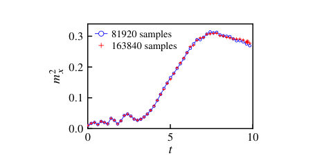
Summary. The paper introduces an efficient tensor network Variational Monte Carlo (tVMC) framework that reduces the computational cost for simulating 2D long-range quantum systems from $O(N^3)$ to $O(N)$. This breakthrough allows for accurate, classical simulation of complex adiabatic protocols in dipolar XY models realized in Rydberg arrays. It establishes a powerful new tool for benchmarking next-generation quantum simulators.
Why it may be interesting. This work provides a crucial algorithmic breakthrough by scaling classical simulations of long-range quantum systems from cubic to linear complexity, directly enabling benchmarking of cutting-edge hardware like Rydberg arrays.
Main problem. Developing an efficient classical simulation method for two-dimensional quantum systems with long-range interactions, which is computationally challenging using standard Variational Monte Carlo (VMC) techniques.
Main result. The authors developed a tensor network VMC framework that reduces the local energy evaluation cost from $O(N^3)$ to $O(N)$, enabling accurate simulations of complex protocols previously beyond classical reach.
Method. They employ an adapted-basis tensor network tVMC framework, utilizing techniques like projected tVMC (p-tVMC) for initial steps and systematic basis splitting to achieve linear scaling in system size N.
Model / system. The study focuses on 2D dipolar XY models realized in platforms like Rydberg arrays or ion traps. The Hamiltonian involves long-range, all-to-all two-body interactions ($1/r^3$ coupling).
Key observables. Local energy, sublattice magnetization (Z), nearest-neighbor and next-nearest-neighbor correlations ($C_x$), and squared staggered magnetization ($m_x^2$).
Important parameters / regimes. System size up to $10 imes 10$, bond dimension D for TNS, and time evolution parameters ($\Delta t$, $\delta(t)$).
Assumptions / limitations. The primary assumption is that the system state can be accurately represented by a Tensor Network State (TNS) ansatz. A technical limitation addressed was the pathology of evolving from product states.
Figures summary. Figure 1 illustrates the experimental protocol for the dipolar XY model. Figure 2 benchmarks TNS-tVMC against exact results for smaller systems, showing convergence. Figure 3 shows time evolution and correlations for the $10 imes 10$ system.
Paper structure. The paper introduces the computational bottleneck ($O(N^3)$) and proposes the novel $O(N)$ tensor network tVMC framework. It details the implementation, including handling initial state projection (p-tVMC), and applies it to simulate adiabatic protocols for dipolar XY models.
In variational Monte Carlo (VMC) calculations of $N$-site quantum systems with arbitrary all-to-all two-body interactions, evaluating the local energy generally costs $O(N^3)$. We introduce a new framework that reduces this cost to $O(N)$ for tensor network states, capable of scalable and accurate computation of real-time dynamics and ground states. As a result, we obtain accurate simulations of the adiabatic real-time protocol of a $10\times10$ dipolar XY model realized in a Rydberg simulator [C. Chen et al., Nature 616, 691 (2023)], which was previously beyond the reach of classical simulation. Going beyond quantum experiments, we also directly perform ground state VMC to compare with the adiabatic state preparation. Our work demonstrates tensor network VMC as a powerful classical simulator for long-range quantum platforms such as Rydberg and ion-trap simulators, which are currently in urgent need of scalable classical benchmarking tools. As a separate technical contribution, we resolve the pathology of evolving from product states within of tensor network VMC.
Authors: Ben Priestley, Mina Doosti
Type: both · Category: quantum information and computing · PDF: https://arxiv.org/pdf/2607.05281v1
Analysis basis: full PDF text, analyzed in chunks
Topic relevance: 🔥 QC/QI experiment 4/5 · quantum measurements 2/5 · Keldysh / 2PI / non-Gaussian methods 1/5 · correlated / nonlocal dissipation 1/5 · driven-dissipative phase transition 1/5 · entanglement & information structure 1/5 · methods for driven-dissipative 1/5
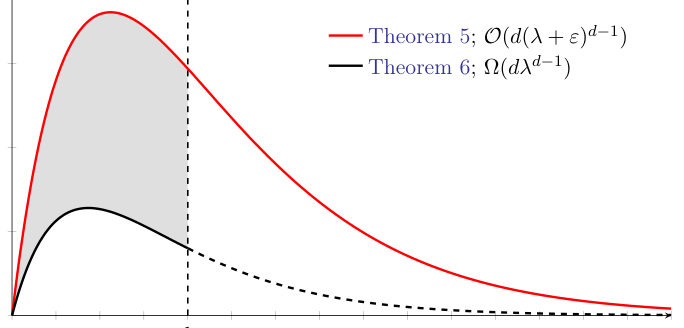
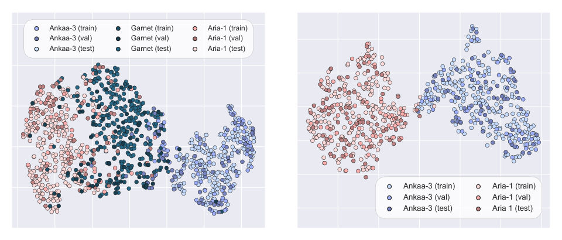


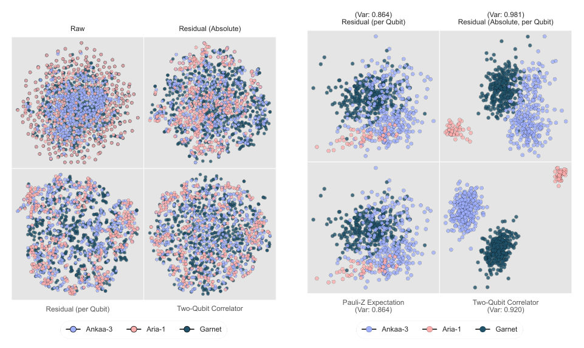
Summary. This paper formalizes backend identifiability in cloud quantum computing, proposing 'routing anonymity' as a necessary security measure. It develops theoretical bounds on how much information can be hidden while maintaining utility and validates these findings with experiments showing high device distinguishability on real hardware.
Why it may be interesting. It provides rigorous security metrics for the practical deployment of quantum computation services, moving beyond algorithmic complexity to address physical implementation vulnerabilities relevant to open quantum systems characterization.
Main problem. The work develops a formal framework for backend identifiability, addressing how classical outputs from noisy quantum hardware can leak information about the service provider's specific physical device or routing choices.
Main result. It establishes 'routing anonymity' as a distinct security requirement for quantum cloud services and quantifies the fundamental utility-anonymity trade-off in this context.
Method. The authors introduce an operational backend-identifiability game, formalizing the problem as hypothesis testing, and use tools like Pauli-transfer-matrices to analyze noise structure.
Model / system. The study models cloud-based quantum computing (QaaS) where users submit circuits to proprietary backends. Experiments are conducted on real hardware platforms like Amazon Braket using ion-trap and superconducting processors.
Key observables. Backend-specific 'fingerprints' imprinted in the classical output distribution, classification accuracies of device identity, and leakage rates measured by Chernoff information.
Important parameters / regimes. The analysis considers circuit workload, finite-shot resolution, repeated access patterns, and post-processing capabilities.
Assumptions / limitations. Theoretical results assume passive i.i.d. access for certain analyses; the framework is designed to handle provider post-processing while maintaining security notions.
Figures summary. Figures illustrate classification performance across varying circuit depths (intermediate-depth principle) and demonstrate temporal leakage by showing how LSTMs can forecast noise distributions from sequential measurements.
Paper structure. The paper moves from defining the problem via toy examples (Lock-and-Key, Tokens) to developing a formal game theory framework for routing anonymity. It then proves theoretical bounds (Chernoff decay, utility-anonymity trade-off) and validates these concepts with extensive experiments on real quantum hardware.
Present-day quantum computing is cloud-based, where a user submits a circuit to a service provider's proprietary backend hardware. While providers may wish to hide implementation details, scheduling choices, or even which physical device was used, noisy finite-shot outputs can carry backend-specific fingerprints: information imprinted in the classical output distribution that can reveal the backend identity. So far, such fingerprints have mostly been studied from a benchmarking perspective, with limited attention to privacy considerations for users and providers. This work develops the first formal framework for backend identifiability and its privacy implications. We introduce a backend-identifiability game and use it to formalise routing anonymity as a security notion for quantum cloud services. We show that backend identifiability is a hypothesis-testing problem and prove that, under passive i.i.d. access to a single backend, routing anonymity decays exponentially at the Chernoff rate. We also establish a utility-anonymity trade-off, imposing fundamental limits on how much backend-specific information can be removed from classical outputs without degrading their usefulness. In addition, we observe that, for noisy quantum hardware, identifying fingerprints are inherently an intermediate-depth phenomenon, and establish a depth principle using Pauli-transfer-matrix tools. We complement the theory with experiments on Amazon Braket on AWS, using ion-trap and superconducting quantum processors. We observe 87-90% classification between superconducting backends and 96-100% classification across physical platforms, and find that identifiability can survive natural forms of post-processing. Overall, these results establish routing anonymity as a distinct security requirement for quantum cloud computing, and provide a framework for quantifying and controlling the utility-anonymity trade-off.
Authors: Leon Adachi, Le Bin Ho
Type: both · Category: quantum information and computing · PDF: https://arxiv.org/pdf/2607.04656v1
Analysis basis: full PDF text, analyzed in chunks
Topic relevance: 🔥 QC/QI experiment 4/5 · quantum measurements 3/5 · entanglement & information structure 2/5 · measurement-induced transitions 1/5
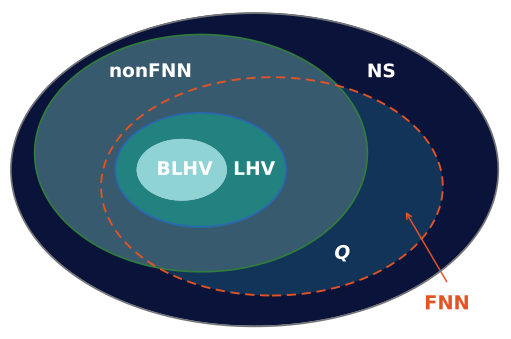


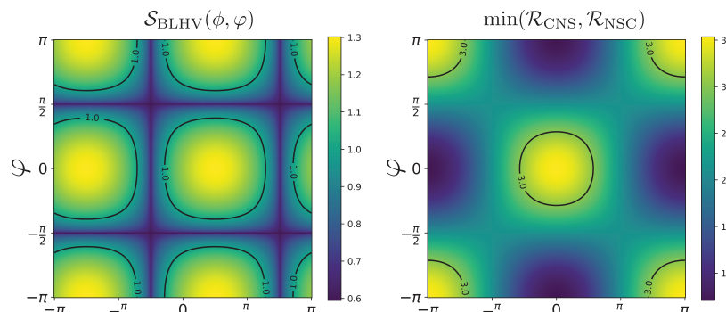
Summary. This paper introduces an operational method to certify network nonlocality in three-party quantum systems by analyzing the role of measurement geometry. Using superconducting hardware, they successfully demonstrated bilocal nonlocality while showing that the stronger Full Network Nonlocal correlations are significantly harder to detect experimentally. This establishes measurement design as a crucial, independent resource for certifying genuine multipartite quantum correlations.
Why it may be interesting. It provides concrete experimental pathways for testing complex multipartite correlations (nonlocality) beyond simple entanglement measures, directly relevant to building fault-tolerant quantum communication networks.
Main problem. The research aims to develop an operational framework to certify network nonlocality, recognizing that measurement design is an independent resource beyond just the distributed entanglement.
Main result. They successfully demonstrated bilocal nonlocality on a superconducting processor and showed that Full Network Nonlocality (FNN) requires substantially stronger certification than bilocal nonlocality.
Method. The framework uses ancilla-assisted meter circuits to evaluate nonlocal observables required for both Bilocal (BLHV) and Fully Network Nonlocal (FNN) witnesses in a three-party quantum network.
Model / system. The system modeled is the bilocal Alice--Bob--Charlie quantum network, initialized with two independent entangled pairs. The analysis focuses on how Bob's joint measurement determines the accessible level of nonlocality.
Key observables. BLHV witness violation ($S_{BLHV} > 1$) and FNN witnesses ($R_{CNS}, R_{NSC}$ exceeding classical bounds like 3).
Important parameters / regimes. The entanglement parameter $ heta$ controlling the initial state, and the measurement geometry parameters $(\varphi, \phi)$ defining Bob's joint measurement.
Assumptions / limitations. The study assumes that measurement geometry can be systematically varied via ancilla-assisted circuits to test for nonlocality resources.
Figures summary. Figures illustrate the hierarchy of nonlocality ($ ext{BLHV} \subset ext{LHV} \subset ext{nonFNN} \subset ext{NS}$), the bilocal network setup, and parameter space plots showing how witness violations depend on measurement settings.
Paper structure. The paper establishes the theoretical hierarchy of nonlocality models (BLHV vs. FNN), develops an operational framework using ancilla-assisted measurements for both witnesses, simulates results to show FNN is stronger than BLHV, and finally tests these protocols experimentally on a superconducting quantum processor.
Quantum networks can exhibit nonclassical correlations that cannot be explained by classical models with independent sources. While the role of entanglement is well understood, the impact of measurement design remains largely unexplored. Here we develop an operational framework for certifying network nonlocality in the bilocal Alice--Bob--Charlie network using ancilla-assisted meters to evaluate the nonlocal observables required for bilocal and fully network nonlocal (FNN) witnesses. The approach successfully reproduces both bilocal and FNN correlations in simulation. On the 156-qubit superconducting processor \textit{ibm_kingston}, we observe bilocal nonlocality with $\mathcal{S}_{\rm BLHV}=1.067(6)>1$ after readout-error mitigation, while the FNN witnesses reach $99\%$ and $96\%$ of their certification thresholds, implying the substantially stronger requirements for FNN certification. We further show that Bob's joint measurement determines the accessible level of network nonlocality: bilocal and FNN certification are optimized by different measurement settings, while both violations can disappear even for maximally entangled states. These results identify measurement geometry as an independent resource for network nonlocality and provide a practical route toward its certification on programmable quantum processors.
Authors: Alexandre C. Orthey, Magdalena Stobińska-Moretto
Type: theory · Category: quantum information and computing · PDF: https://arxiv.org/pdf/2607.04035v1
Analysis basis: full PDF text, analyzed in chunks
Topic relevance: 🔥 quantum measurements 4/5 · entanglement & information structure 3/5 · correlated / nonlocal dissipation 1/5 · measurement-induced transitions 1/5 · methods for driven-dissipative 1/5

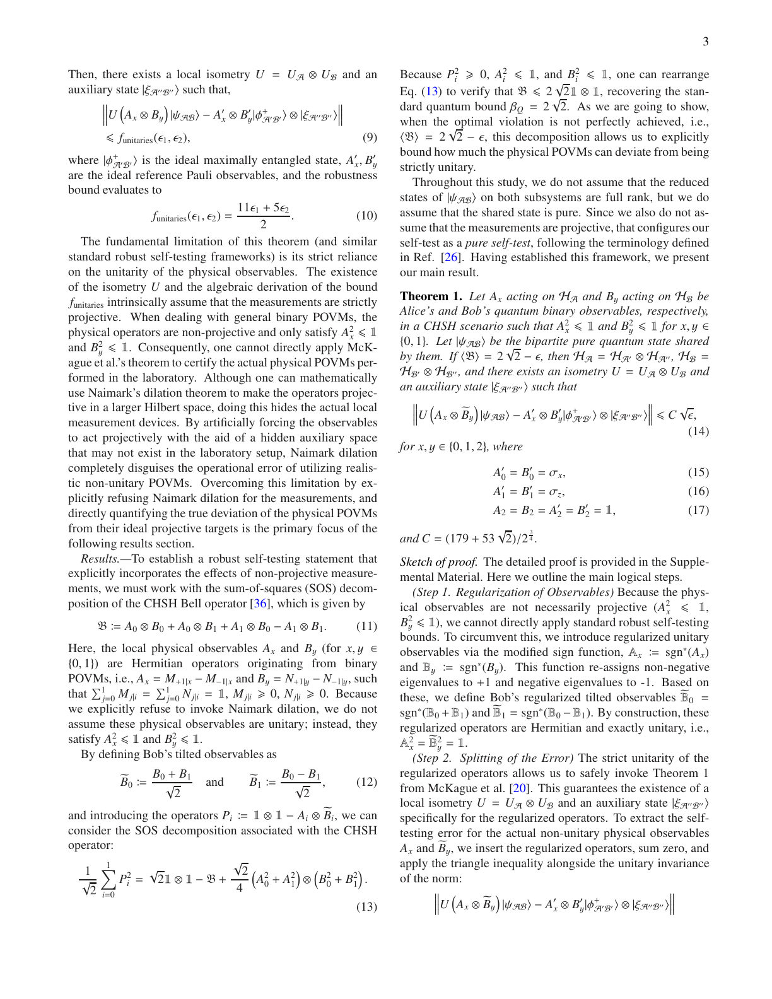


Summary. This paper presents a novel self-testing protocol for entangled states that rigorously accounts for non-ideal, non-projective measurements common in real experiments. By regularizing physical observables instead of assuming perfect projective measurements, the authors derive an error bound scaling as $\mathcal{O}(\sqrt{\epsilon})$. This demonstrates that device-independent certification is significantly harder than standard theoretical models suggest.
Why it may be interesting. This work provides a crucial refinement to device-independent quantum certification protocols, directly addressing the gap between idealized theoretical models (projective measurements) and realistic experimental limitations (non-unitary POVMs).
Main problem. To develop a robust self-testing protocol for quantum states that accurately accounts for non-projective (non-unitary) measurement observables, overcoming limitations in standard models.
Main result. The authors establish an analytic robustness bound scaling as $\mathcal{O}(\sqrt{\epsilon})$ for certifying maximally entangled states using real POVMs, showing this is significantly more demanding than projective model predictions.
Method. The approach circumvents Naimark dilation by regularizing physical non-projective operators using a modified sign function and deriving error bounds based on spectral decomposition and norm inequalities.
Model / system. The system involves two qubits sharing a maximally entangled state (Bell scenario), tested via local Pauli observables measured through general Positive Operator-Valued Measures (POVMs).
Key observables. Local physical observables ($A_x, B_y$), the CHSH Bell operator $B$, and the observed probability distribution $p$.
Important parameters / regimes. The experimental error parameter $\epsilon$; the robustness bound scales as $\mathcal{O}(\sqrt{\epsilon})$.
Assumptions / limitations. Standard frameworks assume projectivity; this work explicitly models non-projective POVMs and regularizes them rather than assuming ideal measurement apparatuses.
Paper structure. The paper builds by first identifying the failure of standard dilation methods, then introducing regularization via a modified sign function ($ ext{sgn}^*$), and finally deriving the total error bound by combining the regularization error ($\Delta$) with the bound derived from regularized unitaries.
Standard device-independent self-testing uses Naimark dilation to assume projective measurements, masking the operational limitations of realistic non-unitary observables. We establish a robust pure self-test for the singlet and Pauli observables that entirely circumvents dilation of the measurement apparatus. Assuming a pure state to model an untrusted source, we regularize the physical non-projective operators and derive an analytic $\mathcal{O}(\sqrtε)$ robustness bound. Our results suggest that device-independent certification of real implementations is significantly more demanding than standard projective models imply.
Authors: Katarzyna Siudzińska
Type: theory · Category: quantum information and computing · PDF: https://arxiv.org/pdf/2607.04555v1
Analysis basis: full PDF text, analyzed in chunks
Topic relevance: 🔥 quantum measurements 4/5 · measurement-induced transitions 2/5 · correlated / nonlocal dissipation 1/5 · driven-dissipative phase transition 1/5 · entanglement & information structure 1/5

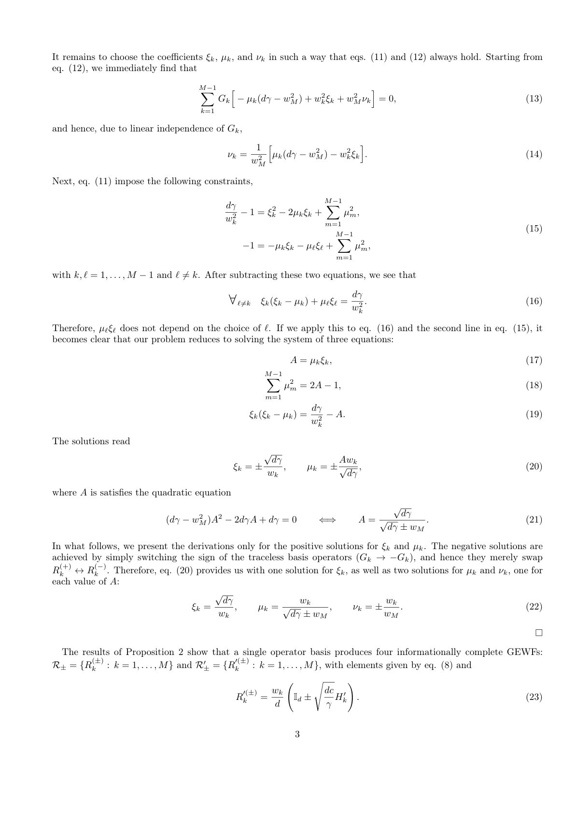


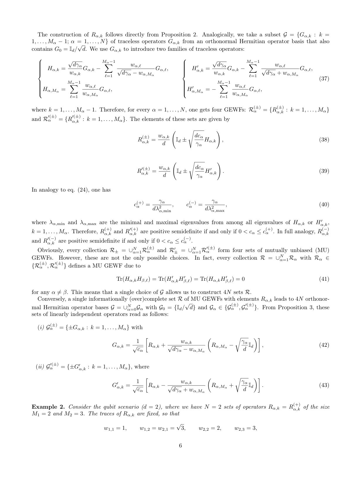
Summary. This paper develops a construction method for characterizing conical 2-designs using generalized equiangular weighted frames, particularly focusing on cases where the constituent operators do not share equal traces. It establishes that MU GEWFs form such designs under a specific condition of parameter uniformity. This advances the understanding of informationally overcomplete quantum measurements.
Why it may be interesting. The rigorous mathematical characterization of quantum measurements (POVMs) that possess high symmetry properties like being a conical 2-design is crucial for understanding optimal quantum state estimation and measurement theory in quantum information processing.
Main problem. The primary goal is characterizing conical 2-designs, especially those constructed from operators whose traces are not equal.
Main result. Mutually Unbiased Generalized Equiangular Weighted Frames (MU GEWFs) have been shown to form a specific class of Conical 2-designs if and only if the associated parameters ($c_\alpha$) are constant across all generating sets.
Method. The authors propose a construction method by generalizing equiangular weighted frames to non-projective operators, utilizing trace conditions and operator basis constructions on qudit Hilbert spaces.
Model / system. The study concerns quantum systems described by a d-dimensional (qudit) Hilbert space ($\mathcal{H} \simeq \mathbb{C}^d$), where the elements are positive semi-definite operators ($R_k$) forming weighted frames or POVMs.
Key observables. Weights ($w_k = ext{Tr}(R_k)$), parameters $\kappa_+$ and $\kappa_-$, index of coincidence $C_L( ho)$, and the variance $V(R, ho)$.
Important parameters / regimes. The dimension $d$ of the Hilbert space; the constant ratio $c$ controlling semi-positivity across different frame elements.
Assumptions / limitations. The analysis assumes linear independence for operators spanning the space ($ ext{Cd}$), and it notes that conical 2-designs with unequal traces never saturate certain index inequalities.
Paper structure. The paper progresses by first defining Generalized Equiangular Weighted Frames (GEWFs) via trace relations, then extending this to Mutually Unbiased GEWFs (MU GEWFs), and finally establishing the necessary and sufficient condition for these structures to qualify as Conical 2-designs.
Conical 2-designs are families of positive operators possessing crucial symmetry properties that allow them to efficiently characterize important quantum measures. However, little is known about their general structures and properties. We propose a construction method of conical 2-designs whose elements are not of equal traces, based on a generalization of equiangular weighted frames to non-projective operators. We provide a detailed analysis of their properties, relations to quantum measurements, and applications, together with examples that go beyond the known classes. This constitutes a major step toward a full characterization of informationally overcomplete quantum measurements.
Authors: Jordi Pera, Joaquim Casulleras, Jordi Boronat
Type: theory · Category: quantum gases · PDF: https://arxiv.org/pdf/2607.05328v1
Analysis basis: full PDF text, analyzed in chunks
Topic relevance: 🔥 analog quantum simulation 4/5 · Keldysh / 2PI / non-Gaussian methods 3/5 · driven-dissipative phase transition 1/5 · exotic spin models in light-matter 1/5


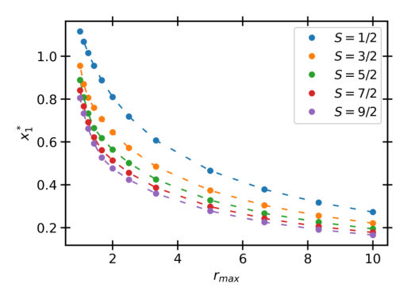
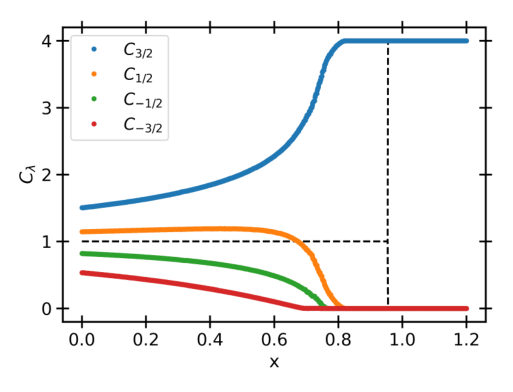
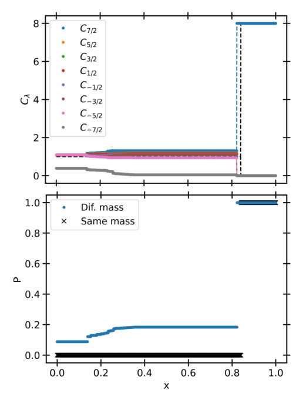
Summary. This paper analytically describes itinerant ferromagnetism in multi-component Fermi gases where the components have unequal masses. By using second-order perturbation theory, the authors show that mass imbalance fundamentally changes the magnetic transition pathway, leading to continuous polarization and requiring weaker interactions than previously thought. This highlights mass mismatch as a key control parameter for quantum magnetism.
Why it may be interesting. This work provides a powerful theoretical tool showing how external parameters like mass mismatch can act as a control knob for inducing or modifying quantum phase transitions (like ferromagnetism) in ultracold atomic mixtures.
Main problem. The study focuses on deriving a fully analytical description of zero-temperature itinerant ferromagnetism in repulsive SU(N) Fermi gases that possess arbitrary mass imbalance among their components.
Main result. Mass imbalance fundamentally alters the magnetic ordering path, causing the system to approach full polarization continuously rather than discontinuously, and it lowers the interaction strength required for ferromagnetism.
Method. The authors employ perturbation theory up to second order in the gas parameter x = kF a0 to derive closed analytical expressions for the beyond-mean-field energy corrections.
Model / system. The system modeled is a repulsive SU(N) Fermi gas at zero temperature, characterized by multiple spin components and varying mass ratios among these components. The interactions are governed by an s-wave scattering length $a_0$.
Key observables. Energy per particle (E/N), polarization (P), occupation factors ($C_\lambda$), and the critical gas parameter required for full polarization.
Important parameters / regimes. The mass imbalance is quantified by ratios like $r_\lambda = m_g / m_\lambda$, and the coupling strength is controlled by the gas parameter $x$.
Assumptions / limitations. The analysis relies on perturbation theory truncated at the second order in the gas parameter x.
Figures summary. Figures compare energy vs. interaction strength for mass-balanced versus mass-imbalanced systems, and plot the critical gas parameter needed to reach full polarization as a function of the maximum mass ratio.
Paper structure. The paper develops the analytical second-order energy expression for arbitrary mass ratios, analyzes how mass imbalance breaks paramagnetic symmetry even at weak coupling, and demonstrates that this asymmetry modifies the entire path toward magnetic ordering compared to the mass-balanced case.
We report a fully analytical description of zero-temperature itinerant ferromagnetism in repulsive SU(N) Fermi gases with arbitrary mass imbalance among components. Using perturbation theory in the gas parameter x = kFa0, with kF the Fermi momentum and a0 the s-wave scattering length, we derive the second-order energy for arbitrary spin polarization and arbitrary mass ratio. Our main result is a closed analytic expression for the beyond-mean-field correction in mixtures with unequal masses. This analytical result extends the theory of dilute Fermi gases beyond the mass-balanced case and provides a compact equation of state for multicomponent mixtures. We show that mass imbalance breaks the paramagnetic symmetry already in the non-interacting limit, favors the occu pation of heavier components, and lowers the interaction strength required to reach a fully polarized state. For S = 1/2, the system evolves continuously from a mass-induced partially polarized state to full ferromagnetism. For larger spins, distinct mass distributions generate qualitatively differ ent polarization paths, including smooth and discontinuous sequences. Our results identify mass imbalance as a powerful control tool for magnetic ordering in ultracold Fermi mixtures.
Authors: Bin Xi, Ken Chen, Qiang Luo, Jie Lu, Jia-Wei Mei, Hong-Gang Luo, Jize Zhao
Type: theory · Category: strongly correlated electrons · PDF: https://arxiv.org/pdf/2607.03707v1
Analysis basis: full PDF text, analyzed in chunks
Topic relevance: 🔥 analog quantum simulation 4/5 · Keldysh / 2PI / non-Gaussian methods 1/5 · entanglement & information structure 1/5 · exotic spin models in light-matter 1/5 · spintronics-quantum-optics interface 1/5


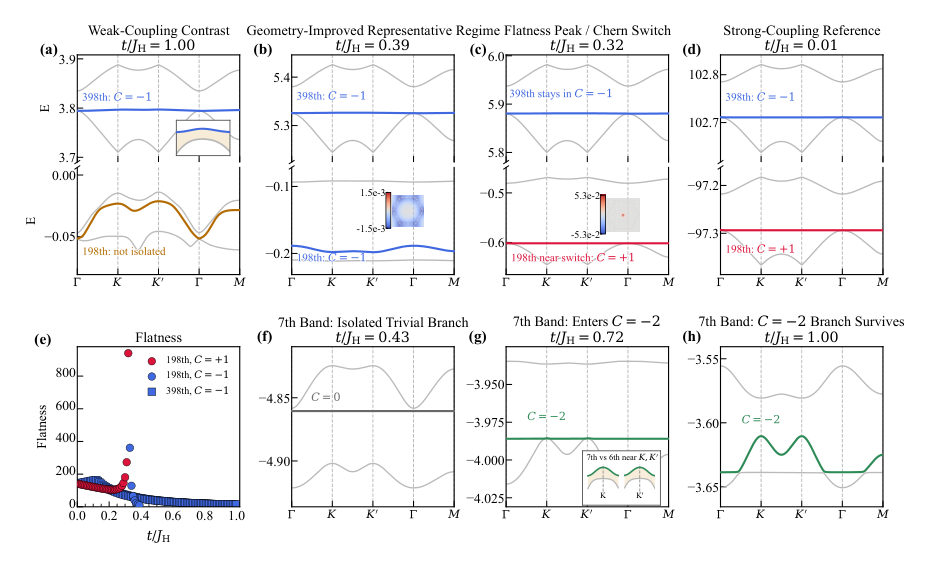

Summary. This work proposes that a Double-Helix Skyrmion Crystal (DHSKX) can engineer robust flat Chern bands by exploiting a mechanism called phase clustering. This topological state surpasses predictions from simple adiabatic models and exhibits finite-size evidence consistent with $ u=1/3$ fractional quantum Hall physics. The architecture is highly promising because it can be directly implemented in various physical platforms.
Why it may be interesting. The concept of using engineered magnetic textures (skyrmions) to induce robust topological electronic states is highly relevant. The mechanism—phase clustering leading to destructive interference while preserving Berry curvature—offers a novel, architecturally controllable route for realizing fractional quantum Hall physics in solid-state analogues.
Main problem. The central challenge is engineering flat Chern bands by suppressing kinetic energy without eliminating the Berry curvature, moving beyond limitations of adiabatic approximations.
Main result. A Double-Helix Skyrmion Crystal (DHSKX) provides a mechanism to achieve isolated flat $|C|=1$ Chern bands via phase clustering, showing evidence for $ u=1/3$ Laughlin-type fractional-Chern-insulator physics.
Method. The analysis uses zero-temperature Kubo Hall response, band-projected exact diagonalization on tori, and quantum geometry calculations to characterize the topological properties of the system.
Model / system. The model is based on a double exchange Hamiltonian applied to a Double-Helix Skyrmion Crystal (DHSKX), which consists of two sublattice-resolved skyrmion textures locked at opposite helicities.
Key observables. Flatness ratio ($\gtrsim 10$), Chern number ($C$), Quantum Geometry ($\sigma_{QG}$), and signatures of Laughlin fractional quantum Hall physics ($ u=1/3$).
Important parameters / regimes. The coupling ratio $t/J_H$ is critical, with an optimal window identified around $0.32-0.44$.
Assumptions / limitations. The results rely on the DHSKX architecture being programmable in various platforms (topolectric, acoustic, photonic) and are supported by finite-size evidence from diagonalization.
Figures summary. Figures illustrate the DHSKX structure, the evolution of flat Chern bands across coupling regimes showing $C=1$ and $C=-2$, and real-space wave function fingerprints demonstrating phase clustering versus localized patterns.
Paper structure. The paper establishes the problem (flat band engineering), introduces the DHSKX as a solution via phase clustering, calculates topological invariants ($C$), demonstrates the non-adiabatic regime surpassing adiabatic limits, and finally provides finite-size evidence for fractional quantum Hall physics ($ u=1/3$).
A central challenge in flat-band engineering is suppressing kinetic energy without sacrificing Berry curvature. We show that a double-helix skyrmion crystal (DHSKX)--two sublattice-resolved skyrmion textures locked at opposite helicities, obtained here as the classical ground state of a frustrated honeycomb spin model--provides such a route under double exchange. The key mechanism is a single real-space organization, phase clustering: the $π$-locked helicities expel the wave function's phase winding from the skyrmion cores, and the magnetic $C_3$ symmetry pins it into three phase-locked clusters whose distributed destructive interference cancels net transport while preserving the Berry curvature. Ordinary skyrmion crystals, even with the same symmetry, do not develop this organization. Phase clustering yields isolated flat $|C| = 1$ Chern bands over broad coupling windows, one of which surpasses the adiabatic reference in quantum geometry at intermediate coupling. In this beyond-adiabatic window, band-projected exact diagonalization gives finite-size evidence consistent with $ν= 1/3$ Laughlin-type fractional-Chern-insulator physics; the same texture also hosts a higher-Chern ($C = -2$) flat band. Built from site-resolved complex hoppings alone, the DHSKX architecture is directly programmable in topolectric, acoustic, and photonic platforms.
Authors: Ying-Lin Li, Po-Yao Chang
Type: theory · Category: strongly correlated electrons · PDF: https://arxiv.org/pdf/2607.03762v1
Analysis basis: full PDF text, analyzed in chunks
Topic relevance: 🔥 entanglement & information structure 4/5 · Keldysh / 2PI / non-Gaussian methods 1/5 · analog quantum simulation 1/5 · driven-dissipative phase transition 1/5

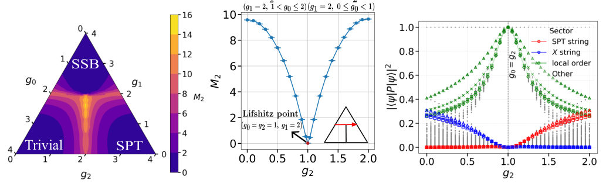


Summary. This work introduces the Pauli spectrum as a superior diagnostic tool compared to stabilizer Rényi entropy for characterizing Symmetry-Protected Topological phases. By analyzing how the Pauli correlations change across phase transitions using duality mappings, the authors demonstrate that this method can resolve subtle differences between gapped and gapless topological orders in quantum many-body systems.
Why it may be interesting. It provides a rigorous theoretical framework for using local correlation measurements (Pauli strings) to distinguish between subtle topological orders in strongly correlated quantum materials, which is highly relevant to understanding exotic electronic states.
Main problem. The paper aims to develop advanced quantum diagnostics beyond standard entanglement measures to characterize Symmetry-Protected Topological (SPT) phases.
Main result. While the stabilizer Rényi entropy provides only a coarse diagnostic, the Pauli spectrum reveals a characteristic crossing structure at phase transitions, offering finer information about string order sector exchange.
Method. The study employs theoretical analysis of quantum correlation functions using the Pauli spectrum and calculating the Stabilizer Rényi Entropy (SRE) for various SPT models.
Model / system. The research analyzes general SPT phases, including gapped, non-intrinsically gapless, and intrinsically gapless types. Specific models include a 1D cluster SPT model and the Cluster Ising Model.
Key observables. Stabilizer Rényi Entropy (SRE), Pauli spectrum (the full probability distribution of Pauli strings), and the crossing structure observed in the Pauli spectrum at phase transitions.
Important parameters / regimes. The coupling constants ($h, g_0, g_1, g_2$) defining the Hamiltonian; system size ($L$); and the Rényi parameter ($\alpha$).
Assumptions / limitations. The analysis focuses on pure ground states and utilizes duality transformations (local-unitary or non-invertible Kramers-Wannier type) to map between different topological phases.
Figures summary. Figures illustrate the calculated $\mathcal{M}_2$ (SRE proxy) and the Pauli spectrum for cluster SPT models, showing distinct red (SPT) vs. blue (trivial) correlations; other figures show convergence checks for these observables in various model regimes.
Paper structure. The paper systematically compares SRE against the Pauli spectrum across different classes of SPT phases (gapped, non-intrinsically gapless, intrinsically gapless), detailing how duality transformations govern the observed spectral changes at critical points.
Quantum entanglement is widely used as a diagnostic of topological phases of matter. Beyond entanglement, non-stabilizerness captures a distinct aspect of quantum many-body states by quantifying their distance from the manifold of stabilizer states. In this work, we study the stabilizer Rényi entropy in symmetry protected topological (SPT) phases, including both gapped SPT, non-intrinsically gapless SPT, and intrinsically gapless SPT phases. Under symmetry preserving perturbations, we find numerically that the stabilizer Rényi entropy exhibits an extremum near the phase transition. However, the stabilizer Rényi entropy alone cannot distinguish different SPT phases. In contrast, the Pauli spectrum reveals a characteristic crossing structure at the transition point. This crossing reflects the exchange of dominant Pauli-string correlations associated with the non-local string order parameters of the two topological distinct phases. For gapped SPT and non-intrinsically gapless SPT phases, the crossing structure can be understood from a local-unitary duality that maps the Pauli spectrum between the two phases. For intrinsically gapless SPT phases, such a local-unitary mapping is absent. Instead, we find that the Pauli spectrum mapping is generated by a non-invertible duality transformation. These results show that although the stabilizer Rényi entropy provides only a coarse diagnostic of phase transitions, the Pauli spectrum contains finer information about the exchange of string order sectors. Our findings demonstrate that quantum magic offers a complementary perspective for characterizing both gapped and gapless SPT phases.
Authors: Jianwei Gong, Junnian Xiong, Ruitao Xiao, Hui Li, Ziyu Li, Huaqing Huang, Dingping Li
Type: theory · Category: strongly correlated electrons · PDF: https://arxiv.org/pdf/2607.04168v1
Analysis basis: full PDF text, analyzed in chunks
Topic relevance: 🔥 Keldysh / 2PI / non-Gaussian methods 4/5 · analog quantum simulation 1/5 · methods for driven-dissipative 1/5

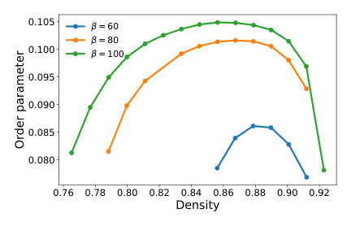

Summary. The paper develops and applies a covariant spin GW method to the Hubbard model to study high-Tc d-wave superconductivity in cuprates. It successfully maps out the complex phase diagram by calculating $T_c$ and comparing it with experimental data, confirming the theoretical framework's utility for strongly correlated electron physics.
Why it may be interesting. This work provides a sophisticated, nonperturbative theoretical tool for strongly correlated systems that explicitly handles competing orders, offering insights into phenomena beyond simple BCS theory relevant to unconventional superconductivity.
Main problem. The primary goal is understanding the microscopic origin of high-temperature superconductivity (d-wave) in cuprate materials while accounting for competing orders like antiferromagnetism and charge density waves.
Main result. The proposed nonperturbative spin GW method successfully calculates key transition temperatures ($T_c$ and $T_{ ext{Néel}}$) that show quantitative agreement with experimental data, mapping out the complex phase diagram.
Method. The authors employ a covariant spin GW approach within the 4-Nambu formalism to derive self-consistent equations for Green's functions and correlation functions, which are then used to map the phase diagram.
Model / system. The study uses the two-dimensional $t$-$t'$-$U$ Hubbard model, simulating cuprate superconductors in both electron- and hole-doped regimes. The theory is formulated using Dyson-Schwinger equations.
Key observables. Néel temperature ($T_{ ext{Néel}}$), superconducting critical temperature ($T_c$), spin correlation function ($\chi_s$), charge correlation function, and the d-wave superconducting order parameter ($|\Delta_d|$).
Important parameters / regimes. Hubbard interaction $U$, hopping parameters ($t, t'$), doping level ($\langle n angle$), and lattice size (up to $64 imes 64$).
Assumptions / limitations. The method assumes translational invariance and relies on approximations like the lowest-order vertex approximation; it also notes that ignoring field fluctuations leads to a BCS-like $T_c$.
Figures summary. Figures illustrate the phase diagram showing boundaries for AF, CDW, and SC orders across doping. Other figures map the evolution of the Fermi surface topology and show the characteristic dome shape of $|\Delta_d|$ vs. doping.
Paper structure. The paper develops a theoretical framework using the 4-Nambu spin-GW formalism to derive self-consistent equations in momentum space, which are then applied to calculate phase boundaries (AF, CDW, SC) and analyze the evolution of electronic states across different doping regimes.
We employ the nonperturbative many-body spin GW method to compute the single-particle Green's function, and the covariance method to evaluate the correlation functions of two body, for the Hubbard model for superconductors. The key transition temperatures, namely the Neel temperature and the superconducting critical temperature Tc are found to be in quantitative agreement with experimental data. The evolution of the Fermi surface in different doping regimes is also presented, which clearly shows transitions from pseudogap to strange metal and to Fermi liquid phase. The method has been benchmarked at strong coupling and low temperature and is free from the fermion sign problem. Simulations on lattices up to 64 times 64 are also feasible, making access to the thermodynamic limit possible. This approach may offer a new route toward investigating strongly correlated systems, especially cuprate superconductors.
Authors: Alex Steiner, Tomasz Andrzejewski, Phila Rembold, Hendrik Poulsen Nautrup, Christian D. Marciniak, Robert Freund, Ivan Pogorelov, Thomas Monz, Philipp Schindler, Marcel Meyer, Nicolai Friis
Type: experiment · Category: quantum information and computing · PDF: https://arxiv.org/pdf/2607.04227v1
Analysis basis: full PDF text, analyzed in chunks
Topic relevance: 🔥 QC/QI experiment 4/5 · entanglement & information structure 2/5

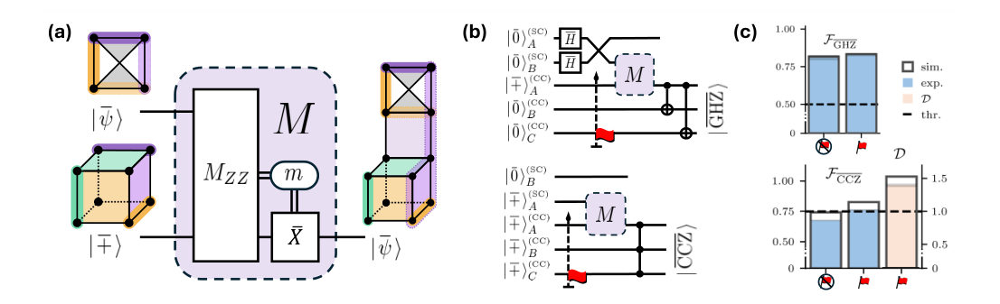
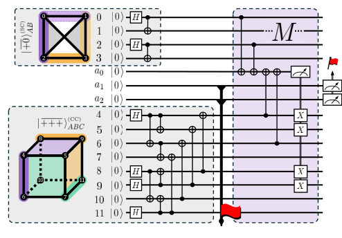
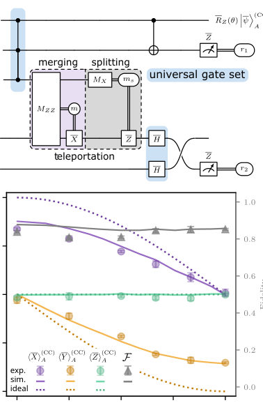
Summary. The research demonstrates how to build complex logical quantum operations on trapped ions by merging two different Quantum Error Correction codes via lattice surgery. They successfully generated and verified genuine multipartite entanglement in both stabiliser and non-stabiliser states. This work establishes a core, fault-tolerant building block for future large-scale quantum computers.
Why it may be interesting. This work provides a concrete, hardware-validated blueprint for scaling quantum computation by solving the fundamental problem of accessing universal gates fault-tolerantly through code combination.
Main problem. The goal is to experimentally demonstrate the generation and certification of genuine multipartite entanglement (GME) between logical qubits using a fault-tolerant universal gate set.
Main result. The authors successfully generated and certified both stabiliser (GHZ) and non-stabiliser states exhibiting GME, while also demonstrating arbitrary single logical qubit rotations. These results confirm the viability of cross-code lattice surgery for building complex quantum computation primitives.
Method. They utilized lattice surgery to combine complementary Quantum Error Correction (QEC) codes—specifically a surface code and a 3D colour code—to access a universal gate set transversally.
Model / system. The experiments were performed on a trapped-ion quantum processor using ${}^{40} ext{Ca}^+$ ions. Information is encoded into logical qubits protected by multiple QEC codes, which are merged via lattice surgery operations.
Key observables. Logical state fidelity for GHZ and non-stabiliser states; the stabiliser norm ($D$) to certify GME and non-stabiliserness.
Important parameters / regimes. Experimental fidelities (e.g., $F_{ ext{exp.GHZ}} = 83.0\%$), noise parameters ($p_1=0.005, p_2=0.015$), and theoretical thresholds for GME/non-stabiliserness.
Assumptions / limitations. The primary assumption is that the lattice surgery procedure correctly merges the codes to provide fault-tolerant access to gates beyond what any single code supports transversally.
Figures summary. Figures illustrate the definition of logical GME, the physical circuits for cross-code lattice surgery (smooth merge M), and the preparation protocols for both GHZ and non-stabiliser states ($ ext{|CCZ} angle$).
Paper structure. The paper systematically details the theoretical necessity of lattice surgery to achieve universal gates, presents the experimental realization on trapped ions using specific codes (SC and CC), demonstrates GME generation for different state types, and concludes with showing arbitrary single-qubit rotations.
Universal quantum computers are expected to generate arbitrary complex quantum states of logical qubits encoded in many physical qubits. This capability hinges on a fault-tolerantly implemented universal gate set, which no single quantum error-correction code admits transversally but which becomes accessible by joining complementary codes via lattice surgery. Here we report on the experimental generation and certification of logical genuine multipartite entanglement in a trapped-ion quantum processor using a transversally implemented universal logical gate set. The gate set is accessed via lattice surgery across two different codes and comprises a Hadamard gate on a four-qubit surface code and a doubly controlled Pauli-$Z$ ($\overline{\mathrm{CCZ}}$) gate on an eight-qubit 3D colour code. To showcase this lattice-surgery toolbox, we generate both stabiliser (Greenberger-Horne-Zeilinger) and non-stabiliser ($|\overline{\mathrm{CCZ}}\rangle$) states of three logical qubits and verify their genuine multipartite entanglement--a form of correlation beyond statistical mixtures of bipartite entanglement across any bipartition. We further use these cross-code primitives to demonstrate arbitrary rotations of single logical qubits via a $\overline{\mathrm{CCZ}}$-based resource gadget accessing the full universal gate set through lattice surgery. Together, these demonstrations showcase the core building blocks of an architecture for fault-tolerant quantum computation and its ability to generate complex logical quantum states.
Authors: Matheus Eiji Ohno Bezerra
Type: theory · Category: quantum information and computing · PDF: https://arxiv.org/pdf/2607.03636v1
Analysis basis: full PDF text, analyzed in chunks
Topic relevance: 🔥 interference shaping light 4/5 · quantum measurements 1/5
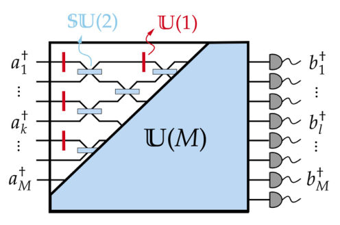
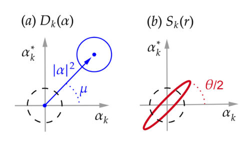

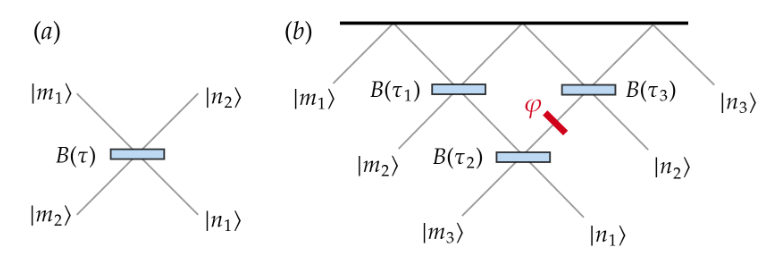

Summary. This thesis provides a comprehensive theoretical analysis of how nonclassical light interference behaves when subjected to noise and partial photon distinguishability. Using advanced mathematical tools like generating functions, it develops new understanding of interference structures for both Fock and Gaussian states. The work is crucial for assessing the feasibility limits of quantum sensing and computation in realistic noisy environments.
Why it may be interesting. This is highly relevant as it tackles the practical limitations (noise, distinguishability) that degrade theoretically predicted quantum advantages in quantum sensing and computation protocols.
Main problem. The study investigates how interference effects involving nonclassical light (Fock and Gaussian states) are affected by realistic imperfections such as partial distinguishability and noise.
Main result. The research identifies new suppression laws for Fock state interference and shows that while some measurement incompatibilities can vanish under optimal conditions, fundamental constraints remain at high photon numbers.
Method. The authors develop analytical tools using the phase-space formalism and generating functions to provide a unified description of quantum optical interference phenomena.
Model / system. The system involves light interfering in linear interferometers, modeled using Fock states and Gaussian states derived from quantized electromagnetic fields. The analysis extends concepts like Boson Sampling (GBS) to include partial distinguishability via an overlap matrix.
Key observables. Interference patterns (e.g., Hong-Ou-Mandel effect), zero probability events ('suppression laws'), quantum estimation precision, and measurement incompatibility.
Important parameters / regimes. Photon distinguishability, photon number ($N$), noise levels, and the degree of partial indistinguishability.
Assumptions / limitations. The analysis builds upon established quantization procedures for electromagnetic fields and assumes applicability of phase-space formalisms to describe interference in noisy channels.
Paper structure. The work progresses by first establishing the theoretical framework using generating functions, then analyzing Fock state interference revealing new suppression laws, followed by extending Gaussian Boson Sampling descriptions for partial distinguishability, and concluding with an examination of quantum multiparameter estimation limits.
This thesis explores the interference of nonclassical states of light, particularly Fock and Gaussian states, in noisy linear interferometers, with applications to quantum information and quantum sensing. Using the phase-space formalism, analytical tools based on generating functions are developed to describe quantum optical interference in a unified way. For multiphoton Fock states, new zero probability events (suppression laws) are identified beyond the previously derived symmetry permutation principle, revealing rich interference structures that is degraded with photon distinguishability. For Gaussian states, the Hafnian-based description of Gaussian Boson Sampling is extended to include partial distinguishability via the overlap matrix of the internal state of the photons. Finally, the link between these interference effects and quantum multiparameter estimation is examined for the simultaneous estimation of phase and loss. This study shows that while probe incompatibility can vanish for optimized non-Gaussian states and some two-mode Gaussian states, at high photon number, measurement incompatibility remains a fundamental constraint even in this limit.
Authors: Emmanuel Giner
Type: theory · Category: other · PDF: https://arxiv.org/pdf/2607.03897v1
Analysis basis: full PDF text, analyzed in chunks
Topic relevance: 🔥 Frenkel-Kontorova 4/5
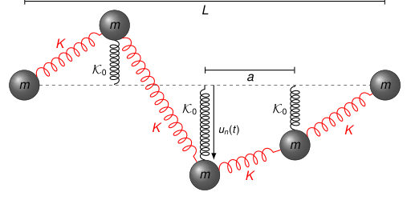
Summary. This paper proposes deriving the Schrödinger equation from a classical phonon model based on coupled harmonic oscillators. By taking the continuum limit and applying complex variable transformations, the authors show how the dynamics of this lattice system reproduce the non-relativistic quantum algebra. It provides an alternative, classically grounded perspective on the foundations of quantum theory.
Why it may be interesting. This work offers a novel, purely classical dynamical pathway to derive the fundamental equations of quantum mechanics, bypassing standard canonical quantization procedures. This is particularly interesting for researchers seeking deep physical interpretations of quantum formalism.
Main problem. The central goal is to reproduce the algebraic structure of quantum mechanics (Schrödinger equation) by deriving it from a purely classical physical model, specifically involving coupled harmonic oscillators.
Main result. The Schrödinger equation for a single spinless particle and its associated algebra can be derived in the non-relativistic limit by analyzing the continuous dynamics of a phonon system using complex variable transformations.
Method. The methodology involves taking the continuum limit of the Newtonian equations governing a lattice of coupled oscillators, yielding the Klein-Gordon equation, which is then transformed into the Schrödinger form via time scale separation and complex variables.
Model / system. The model is based on the linearized Frenkel-Kontorova system (a 1D lattice of coupled harmonic oscillators). The continuous limit yields a field theory described by the Klein-Gordon equation, which then reduces to the Schrödinger equation in the non-relativistic regime.
Key observables. Total energy, momentum, and the wave function $\psi(x, t)$ itself are shown to correspond between classical global observables and quantum operators.
Important parameters / regimes. The derivation is explicitly limited to the non-relativistic regime; relativistic effects and the measurement problem are noted as outside the scope of this part.
Assumptions / limitations. A key assumption is that a complex change of variables can map the real-valued classical dynamics onto the quantum formalism, although this contradicts the requirement for intrinsically real fields in their Newtonian interpretation.
Figures summary. Not specified by the notes provided.
Paper structure. The paper proceeds from the discrete lattice model (Newtonian equations) $ o$ continuous limit (Klein-Gordon equation) $ o$ complex variable transformation and time scale separation $ o$ non-relativistic limit (Schrödinger equation). A separate discussion addresses dissipative forces leading to non-Hermitian Hamiltonians.
The Schrodinger equation for a single spinless particle is formally obtained via a classical phonon model, namely the Frenkel-Kontorova model. Starting from a one-dimensional lattice of coupled harmonic oscillators, we show that the continuous limit of the corresponding Newtonian equation of motion yields the Klein-Gordon equation for a real-valued field. By introducing a complex-valued change of variables mixing the real-valued displacement and velocity fields, and by separating fast and slow time scales, the Klein-Gordon equation is written as the Schrodinger equation within the non-relativistic limit. This complex change of variable also allows to rewrite classical global observables of the phonon field, such as the total energy or momentum, as the corresponding quantum observables. Additionally, we show that when a friction force is incorporated into the classical model, the corresponding Klein-Gordon equation can be rewritten as a Schrodinger equation with a non-Hermitian Hamiltonian. While the global approach is limited here to the non-relativistic regime and does not address the measurement problem, quantization or relativistic effects, it nonetheless illustrates how quantum algebra and complex-valued wave functions can be exactly reproduced using classical dynamics. The relativistic regime for a spinless particle and the link between commutators and Poisson brackets is addressed in the second part of this series.
Authors: H. P. Laba, V. M. Tkachuk
Type: theory · Category: quantum information and computing · PDF: https://arxiv.org/pdf/2607.04348v1
Analysis basis: full PDF text, analyzed in chunks
Topic relevance: 🔥 entanglement & information structure 4/5
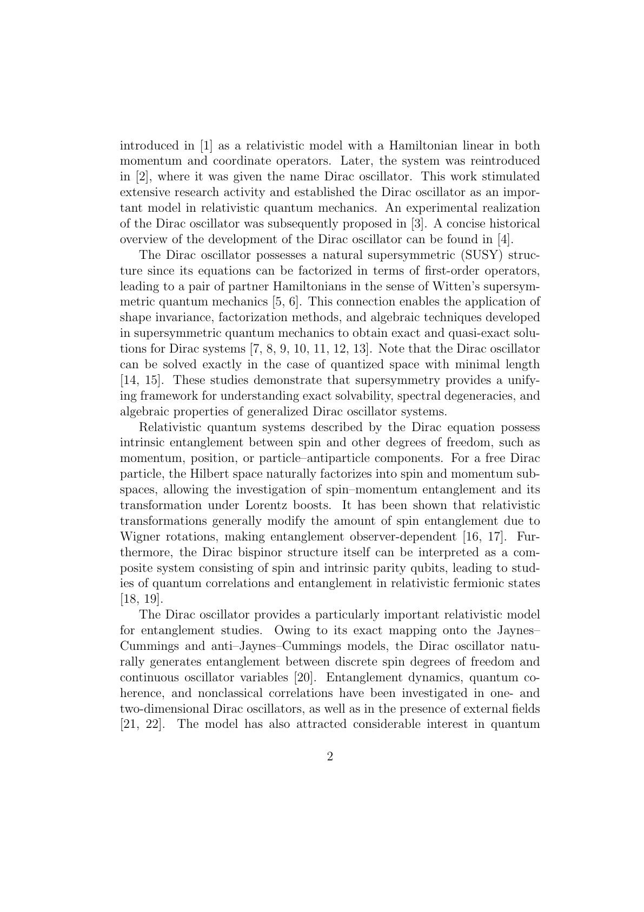
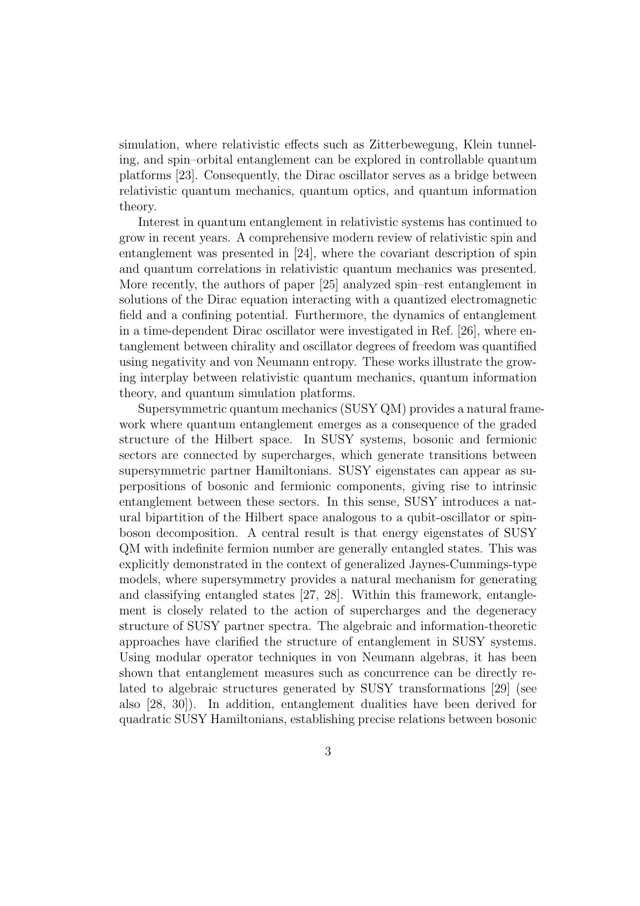
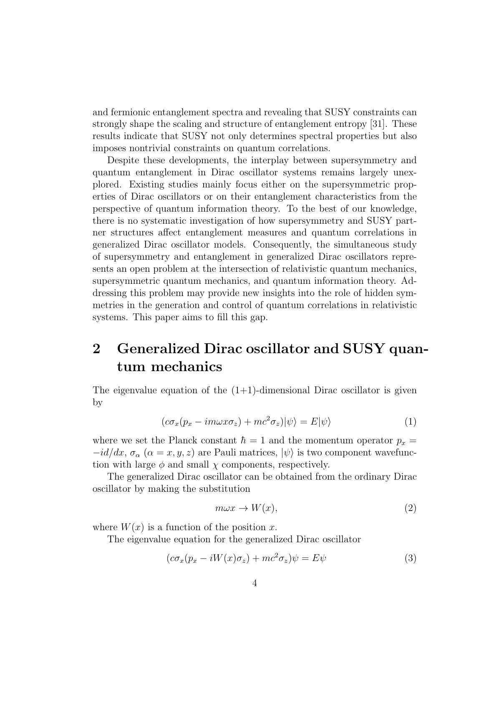
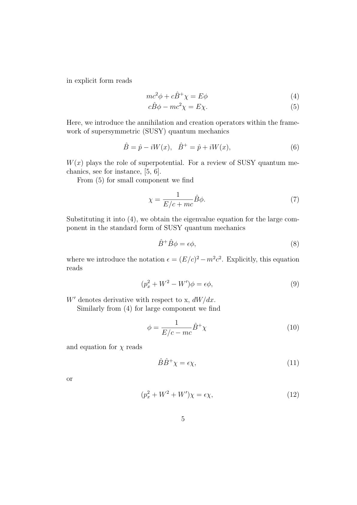
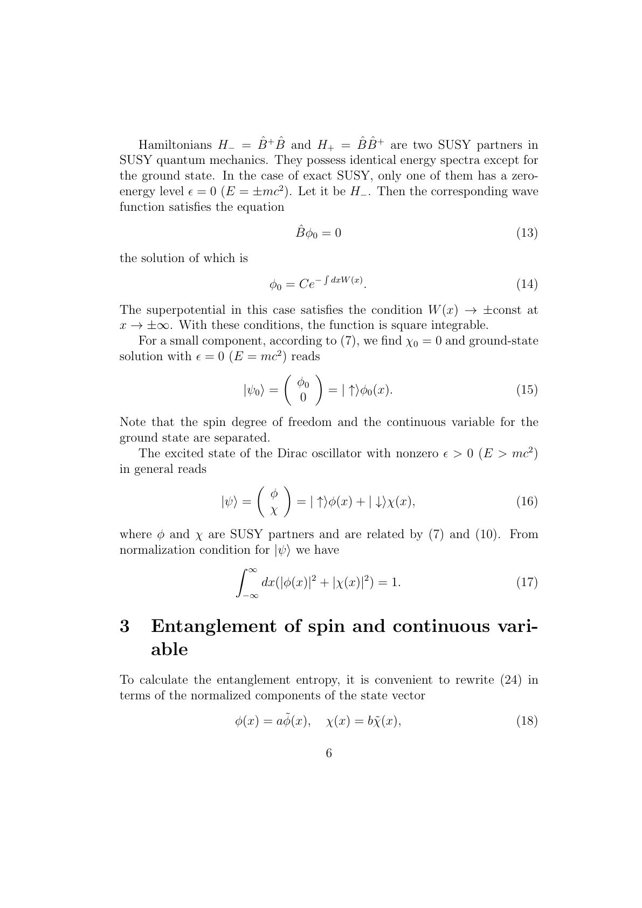
Summary. This theoretical paper analyzes the entanglement between spin and continuous variables in the generalized Dirac oscillator using supersymmetric techniques. It shows that the calculated entanglement entropy is zero for the ground state but grows with energy, confirming that this correlation is fundamentally relativistic. The findings highlight how underlying symmetries govern quantum information properties in relativistic field models.
Why it may be interesting. This work provides a concrete example of how fundamental symmetries (SUSY) can dictate non-trivial quantum correlations (entanglement) in relativistic models, offering insights applicable to structured quantum systems beyond standard qubit architectures.
Main problem. The study investigates the interplay between supersymmetry (SUSY) properties and quantum entanglement within generalized Dirac oscillator systems.
Main result. The entanglement entropy is found to be zero for the ground state but increases with energy, reaching a maximum value in the infinite energy limit. Crucially, this entanglement has a purely relativistic origin, vanishing in the nonrelativistic limit.
Method. The analysis uses SUSY transformations to decouple the system into components ($ ilde{\phi}, ilde{\chi}$) and calculates the entanglement entropy by finding the eigenvalues of the reduced density matrix traced over continuous variables.
Model / system. The model is a (1+1)-dimensional generalized Dirac oscillator, which is a relativistic quantum mechanical system whose Hamiltonian incorporates SUSY structure. The analysis involves solving coupled differential equations derived from the eigenvalue problem.
Key observables. Entanglement entropy ($S$), overlap integral ($Z$), and the energy eigenvalues ($E$).
Important parameters / regimes. The parameter $\gamma$, which quantifies the relationship between the two SUSY partner components, and the relativistic limit $E o \infty$.
Assumptions / limitations. The analysis heavily relies on the existence of a supersymmetric structure ($\hat{B}, \hat{B}^+$) to relate the system's components.
Paper structure. The paper first establishes the SUSY framework for the generalized Dirac oscillator, then parameterizes the state vector using SUSY partners. It proceeds to calculate the entanglement entropy based on these components and analyzes its dependence on energy and symmetry properties.
The supersymmetric properties of the generalized Dirac oscillator allow us to determine the entanglement entropy between the spin and the continuous variable in a purely algebraic manner. The entanglement has a relativistic origin and disappears in the nonrelativistic limit. The entanglement entropy attains its maximal value in the limit of infinite energy.
Authors: Chan Li, Nigel Goldenfeld
Type: theory · Category: disordered systems and neural networks · PDF: https://arxiv.org/pdf/2607.04135v1
Analysis basis: full PDF text, analyzed in chunks
Topic relevance: Keldysh / 2PI / non-Gaussian methods 3/5 · driven-dissipative phase transition 3/5 · non-equilibrium universality 3/5 · methods for driven-dissipative 2/5 · non-equilibrium dynamics 2/5 · scars & prethermalization 2/5 · Frenkel-Kontorova 1/5 · correlated / nonlocal dissipation 1/5
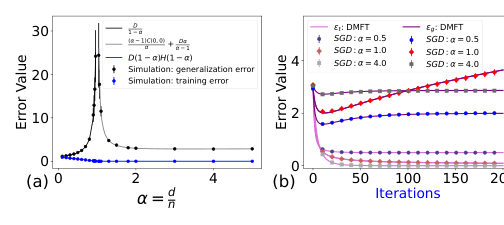
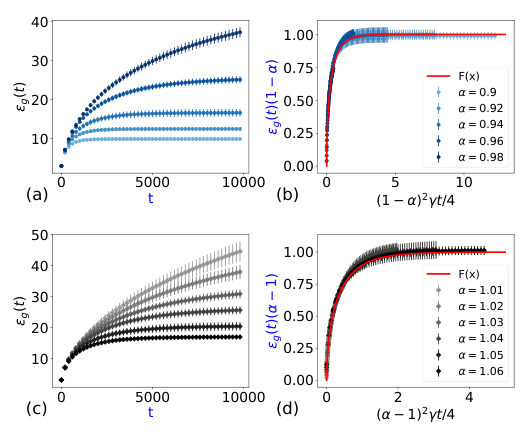


Summary. This theoretical work explains 'double descent' by modeling neural network training as a dynamical phase transition. It shows that the improved generalization in overparameterized regimes is mathematically equivalent to breaking ergodicity, mirroring physics seen in superconductors where the Fluctuation-Dissipation Theorem breaks down.
Why it may be interesting. The direct analogy drawn between superconducting phase transitions (a hallmark of non-equilibrium dynamics) and benign overfitting provides a powerful, physical framework for understanding modern deep learning phenomena.
Main problem. The paper aims to provide a theoretical explanation for the 'double descent' phenomenon in overparameterized neural networks, where generalization error decreases again beyond the interpolation threshold.
Main result. This double descent behavior is shown to be the outcome of a dynamical phase transition characterized by the breakdown of the Fluctuation-Dissipation Theorem (FDT) and broken ergodicity.
Method. The analysis employs Dynamical Mean-Field Theory (DMFT) applied to the stochastic gradient flow describing the training process, comparing it to known critical phenomena in condensed matter physics.
Model / system. The system models the training dynamics of a linear student network learning from a teacher model. The mathematical framework involves analyzing correlation and response functions derived from the SGD process in the thermodynamic limit.
Key observables. Generalization error ($\epsilon_g$), training error ($\epsilon_t$), Response function ($R(t, t')$), Correlation function ($C(t, t')$), and the violation of the Fluctuation-Dissipation Theorem (FDT).
Important parameters / regimes. The overparameterization ratio $\alpha = d/N$, which dictates the system's regime ($\alpha < 1$ vs. $\alpha > 1$).
Assumptions / limitations. The analysis relies on mapping the learning dynamics onto established models from statistical physics, particularly drawing analogies to superconducting transitions and normal metals.
Figures summary. Figures likely compare the scaling of generalization error ($\epsilon_g$) across different regimes ($\alpha$), showing a transition point analogous to $T_c$ or $\alpha=1$, and illustrating the functional form of the response function in both equilibrium and non-equilibrium states.
Paper structure. The paper progresses by first establishing the ML problem (double descent), then mapping it onto a physical model using DMFT, analyzing the critical behavior at the interpolation threshold ($\alpha=1$), and finally interpreting the resulting FDT violation as the mechanism for generalization in the overparameterized regime.
The remarkable ability of modern neural networks to generalize improves with increasing network capacity, even when the number of model parameters or effective degrees of freedom exceeds the number of training data points. This phenomenon is all the more surprising given that generalization error diverges when the number of model parameters approaches a critical value from below. Here we use dynamical mean field theory to show that this so-called "double descent" behavior is the outcome of a phase transition in the stochastic field theory describing the training process. We calculate the critical exponents and scaling function of the double descent phase transition, and show that it is marked by a breakdown of the fluctuation-dissipation theorem associated with broken ergodicity. The corresponding response function has the same functional form as the simple London model of the superconducting transition, with the rigidity of the wave function corresponding to the neural network's ability to generalize accurately.
Authors: Leonardo Finocchiaro, Marco Robbio, Diogo Gomes, David Gunn, Adithi Udupa, Axel M. Eriksson, Leonardo Novo, Giulia Ferrini
Type: theory · Category: quantum information and computing · PDF: https://arxiv.org/pdf/2607.04914v1
Analysis basis: full PDF text, analyzed in chunks
Topic relevance: interference shaping light 3/5 · quantum optics experiment 3/5 · QC/QI experiment 2/5 · methods for driven-dissipative 2/5 · quantum measurements 2/5 · Keldysh / 2PI / non-Gaussian methods 1/5 · analog quantum simulation 1/5 · correlated cavity matter 1/5 · driven-dissipative phase transition 1/5
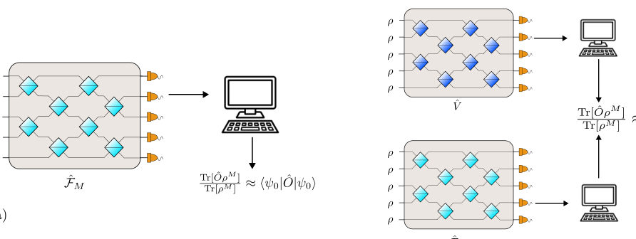
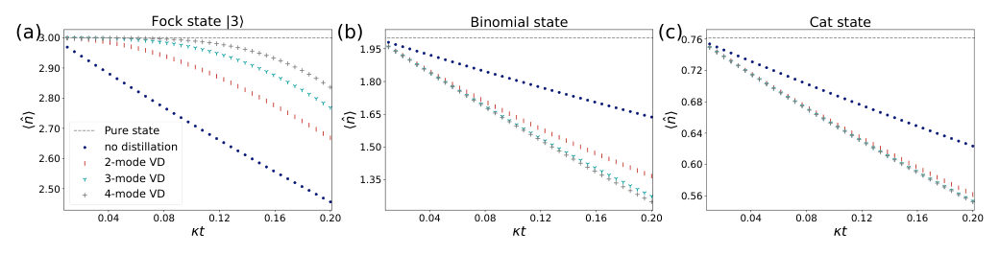

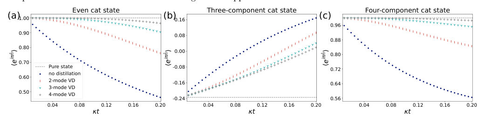
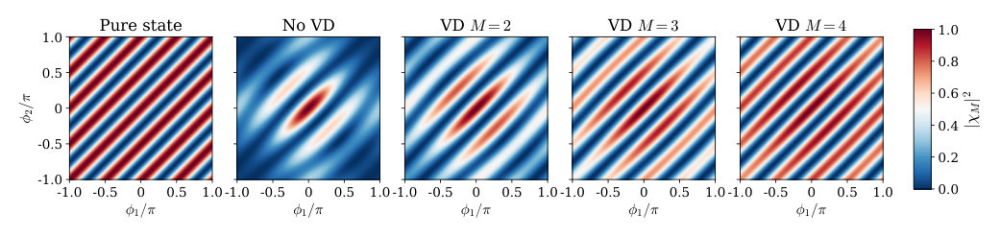
Summary. This paper develops a comprehensive framework to apply virtual distillation—an error mitigation technique—to bosonic systems and CV quantum computing. By leveraging linear-optical interferometers, the authors derive protocols to estimate key observables like quadratures and number operators even when the input state is corrupted by noise such as photon loss. This offers a practical path toward fault-tolerant measurements in photonic quantum processors.
Why it may be interesting. This is highly relevant as it provides concrete, experimentally implementable error mitigation techniques (VD) tailored specifically for the continuous-variable nature of bosonic quantum processors, bridging theory toward practical photonic quantum computation.
Main problem. The primary goal is to extend error mitigation techniques, specifically virtual distillation (VD), from qubit systems to bosonic quantum information processing and continuous-variable quantum computing.
Main result. The authors establish a general framework for VD in bosonic systems using experimentally accessible linear-optical interferometers, allowing the recovery of noise-mitigated expectation values for various observables.
Method. The methodology involves deriving protocols based on diagonalizing cyclic shift operators implemented via passive linear-optical interferometers to estimate noisy expectation values from multiple copies of the state.
Model / system. The work focuses on bosonic quantum systems, utilizing continuous-variable (CV) descriptions with quadrature ($\hat{q}, \hat{p}$) and number operators. The protocols are designed for implementation using linear-optical interferometers.
Key observables. Number operators, phase-shift operators, arbitrary quadratures ($\hat{q}_ heta$), and correlators of arbitrary order (estimated via the characteristic function).
Important parameters / regimes. The error suppression scales exponentially with the number of copies ($M$) and is analyzed in regimes affected by photon loss and dephasing.
Assumptions / limitations. A key assumption for VD effectiveness relates to how noise modifies the density matrix ($ ho$), specifically requiring $ ho$ to be close to a specific form involving the dominant eigenvector. Eigenvector drift remains a potential limitation.
Figures summary. Figures illustrate the comparison of estimated expectation values (e.g., number operator, parity operator) under noisy conditions versus those mitigated by VD protocols using different measurement methods (Method 1 vs Method 2).
Paper structure. The paper builds from establishing the general framework for bosonic VD, detailing specific measurement protocols using single and double interferometers to access various observables, and concluding with applications to quantifying noise suppression in photon loss and dephasing scenarios.
Virtual distillation is a promising error-mitigation technique that exploits multiple copies of a noisy quantum state to estimate observables as if measured on a purified state. Although originally introduced in the context of bosonic many-body systems under the name of virtual cooling, its development and applications have largely focused on qubit-based quantum computation. Here, we establish a framework for virtual distillation in bosonic quantum information processing and continuous-variable quantum computing. Building on a diagonalization of cyclic shift operators implemented with passive linear-optical interferometers, we derive experimentally accessible protocols for estimating virtually distilled expectation values of observables relevant to bosonic architectures. In particular, we show how to recover noise-mitigated expectation values of number operators, phase-shift operators, and arbitrary quadratures from multi-copy measurements. For number operators, we further demonstrate the estimation of virtually distilled correlators of arbitrary order through the characteristic function of the photon-number distribution. We apply the framework to states affected by photon loss and dephasing, two of the dominant noise mechanisms in bosonic quantum computation, and quantify the resulting suppression of noise contributions. Our results extend virtual distillation beyond its original setting and provide a practical route toward error-mitigated measurements in bosonic quantum processors using experimentally available linear-optical resources.
← Index · ← Previous · Next →